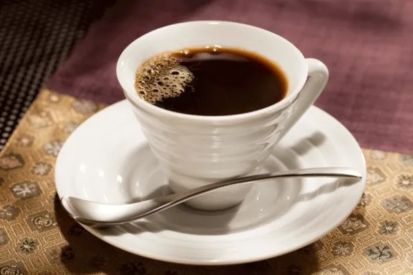

CÁFE TRADICIONAL
Um café tradicional é aquela bebida feita a partir dos grãos de café moídos, geralmente de diversas regiões produtoras, como América Latina, África ou Ásia. A forma de preparo pode variar dependendo do local, mas em muitos países é um ritual importante.